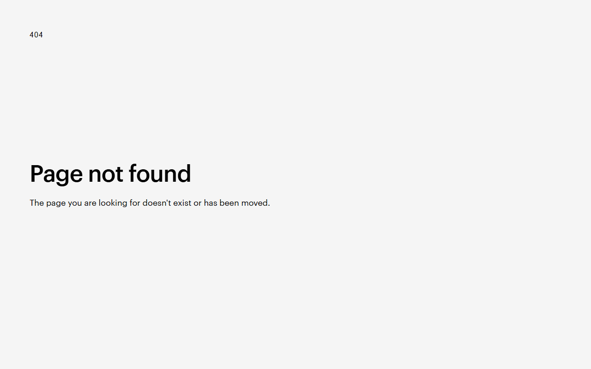
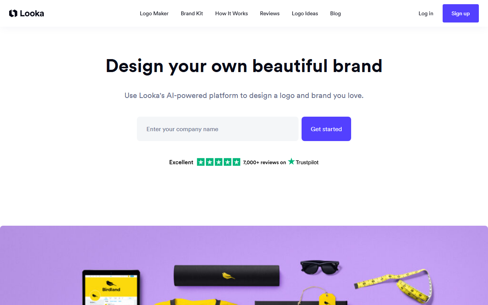

AIロゴ作成ツールおすすめ3選｜日本語・SVG・商用利用を比べる
AIロゴ作成ツールは、屋号や業種をもとにロゴ案を作るサービスです。個人事業主や小規模事業者でも編集可能。案を無料で作れても、データの保存や商用利用には料金がかかる場合があります。
比べるのは、日本語UIと無料範囲。SVG出力と商用利用条件も取り上げ、Logome・Canva・Lookaの違いをまとめました。
AIロゴ作成ツールおすすめ3選の早見
- Logome：PNG・SVG・PDFを案内
- Canva：無料／日本語UI・円建て
- Looka：作成無料／買い切り$20から
- 日本語UI：確認済みはCanva
- 商用利用：素材と商標を別確認
SVGやPDFまで書き出したいなら、Logomeが候補です。基本機能の無料オプションに加え、月額プランには7日間トライアルがあります。
公式ページでは、ロゴの編集機能と案内されている出力形式を見られます。
AIロゴ作成ツールの選び方｜日本語・持ち出し形式・権利を分けて確認する
最初に日本語対応を見ます。次は、無料で持ち出せる範囲とファイル形式。最後に権利を確かめます。 生成画面がきれいでも、納品や印刷に使えるとは限りません。
日本語入力・日本語フォント・日本語UIは別に見る
日本語UIとは、画面を日本語で操作できることです。別に見るのは、屋号の入力可否と文字崩れ。日本語フォントの有無も調べます。
無料生成と無料ダウンロードを混同しない
生成・編集が無料でも、透過背景や高解像度データの取得時に料金が発生します。Lookaは作成・編集まで無料で、ダウンロードと権利取得は購入後です。
PNGだけでよいか、透過PNG・SVG・PDFまで必要か決める
WebサイトやSNSならPNG、看板への拡大や別ソフトでの再編集を見込むならSVGやPDFが候補です。形式名があっても、選んだプランで保存できるとは限りません。
商用利用・素材ライセンス・商標登録を一括りにしない
商用利用が認められていても、テンプレートとフォントには別の条件があります。アイコンも同様。商用利用の許可が、そのまま商標登録の許可になるわけでもありません。
契約や購入の前に確認したいのは、次の4点です。
- 日本語の屋号を正しく入力・編集できるか
- 無料でできるのは生成までか、ダウンロードまでか
- 透過PNG・SVG・PDFなど必要な形式を保存できるか
- 生成物全体と素材の権利・商用利用・商標の条件がどう分かれているか
AIロゴ作成ツールおすすめ3選
ロゴ専用の画面で作り、買い切るならLookaが候補です。日本語で整えて周辺制作へ広げるならCanva。SVG・PDFを含む出力候補で選ぶならLogomeです。 ロゴ案から本番データまで、必要な作業に合わせて選びます。
Logome｜SVG・PDFまで出力候補にしたい人向け

撮影画面の表示は、英語の「404 Page not found」です。サービス内容は読み取れません。
出力形式には、高解像度PNG・SVG・PDFが案内されています。編集できるのは、色・フォント・アイコン・レイアウト。ただし、希望する形式を無料または希望価格で取得できるかは判断できません。
- 向く用途：AIでロゴ案を作り、SVGやPDFを含む形式で仕上げたい
- 無料入口：基本機能の無料オプションと、月額プランの7日間トライアルは別枠
- 持ち出し形式：PNG・SVG・PDFを案内
- 日本語：公開ページには、UI・日本語入力・日本語フォントの対応範囲が記載されていない
- 購入実務：正確な価格・請求通貨・決済手段・請求書対応の案内が公開ページにない
- 権利：商用利用とダウンロード後の権利条件は登録前に判断できない
月額・年額プランは、どちらも自動更新です。月額トライアルの解約期限は更新24時間前。アカウント設定から手続きすれば、請求されません。年額にはトライアルがなく、決済後・更新後・途中解約時の返金も対象外です。
ロゴ作成画面へ進めたら、価格と保存形式を見ます。権利と決済手段の表示も確かめましょう。
Canva｜日本語UIで名刺やSNS画像まで整えたい人向け
料金ページは日本語表示です。無料・Canvaプロ・Canvaビジネスなどのプラン名が並んでいます。
Canvaは日本語UIを備えています。料金は円建て。別の方法で作った案を日本語で整え、名刺やSNS画像へ展開する仕上げに向きます。プレゼン資料も同じ画面で作れます。
- 向く用途：ロゴ案の日本語組版と周辺制作物を一つの環境で整えたい
- 無料入口：Freeは0円、5GBのクラウドストレージと月間最大20回のAI共有利用枠を利用可能
- 持ち出し形式：Freeでは通常のPNG・JPG・PDF、SVGと透過PNGはProなどの対象プラン
- 日本語：UIは日本語対応
- 購入実務：円建て。JCBを含む対応カードとPayPal、設定画面からのPDF請求書に対応
- 権利：Free／Pro素材はライセンスの範囲内で商用利用できるが、ライブラリ素材は原則として商標に使えない
Proは年額11,800円／人、Businessは年額18,800円／人です。カードは発行国ごとの利用可否まで保証されていません。
Freeと有料プランの価格に加え、各プランに含まれる機能を見比べられます。
商標登録を考えるなら、CanvaライブラリのFree／Pro素材は避けます。中心は自作・アップロード素材。フォントと線に加え、単純な図形も例外です。ロゴテンプレートは、独占権が不要な制作や着想用に限ります。
Looka｜ロゴ特化型で買い切りパッケージを選びたい人向け

画面は英語表示です。会社名の入力欄と「Get started」ボタンが見えます。
無料の範囲は、ロゴの作成・編集・プレビュー・保存まで。完成ファイルと権利は、購入後に取得します。料金は、ロゴ単体の買い切りとBrand Kitの年額プランに分かれます。
- 向く用途：ロゴ専用の画面で候補を作り、必要な形式を買い切りたい
- 無料入口：作成・編集・プレビュー・保存まで無料
- 持ち出し形式：Basicは低解像度PNG 1点、PremiumはPNG・EPS・SVG・PDFなど
- 日本語：公開ページではUI・日本語入力・日本語フォント・日本語サポートの対応範囲が分からない。問い合わせ窓口はチャット・メール・電話
- 購入実務：米ドル建てで国外から購入可。Visa・Mastercard・American Expressに対応し、PayPalはロゴ単体のみ。請求書対応は未確認
- 権利：購入者はダウンロードしたロゴ全体の権利を持つが、個別シンボルの権利は含まれない
Discoverとプリペイドカードは対象外。JCBは公式の対応一覧にありません。購入後も残るのは、ロゴの権利と無制限の編集権。ただし、商標として保護できるかは別に確かめます。
会社名を入力してロゴ案の作成を始められ、Brand Kitの案内にも進めます。
購入前に必要な成果物を分けておきます。ロゴ単体なら買い切り、名刺やSNS素材を継続して作るならBrand Kitが候補です。
無料で作れる範囲と料金が発生するタイミング
Canvaには常設Freeがあります。Lookaは作成・編集まで無料。Logomeには無料基本機能と7日間トライアルがあります。
Canvaは無料プランで作成し、必要な素材と出力形式で有料化を判断する
Canva Freeは0円です。付属するのは、5GBのクラウドストレージと月間最大20回のAI共有利用枠。通常のPNG・JPG・PDFで足りる間は、Freeが候補です。SVGまたは透過PNGが必要になった場合の切り替え先は、Proなどの対象プラン。日本向け料金はProが年額11,800円／人、Businessが年額18,800円／人です。
Lookaは作成無料でもダウンロードと権利取得は購入後
Lookaの料金は、ロゴ単体の買い切りとBrand Kitの年額契約に分かれます。円額は1ドル=158円の目安（為替で変動）です。
- Basic Logo Package：$20、約3,160円。低解像度PNG 1点
- Premium Logo Package：$65、約10,270円。PNG・EPS・SVG・PDFなど
- Brand Kit：年額$96、約15,168円
- Brand Kit Web：年額$129、約20,382円
ロゴデータだけなら買い切り、ブランド素材を継続して作るなら年額契約が候補です。国外からも購入可能。対応カードはVisaとMastercardで、American Expressも対象です。PayPalはロゴ単体のみ。Brand Kitはアカウント内で解約でき、当期末まで使えます。
Logomeは公開料金を確認できていない
用意されているのは、月額・年額プランです。基本機能には無料オプションがあり、月額プランは7日間トライアル付き。公開ページでは、正確な価格と無料ダウンロード形式が分かりません。利用上限と決済手段も不明。月額・年額は、どちらも自動更新です。試す前に、更新24時間前までの解約期限を登録画面で確かめましょう。
Canvaでは、Freeと有料プランの価格、必要な素材や機能の違いを見比べられます。
Lookaでは、買い切りのBasic・Premiumと年額のBrand Kitから、必要な形式に合うものを選べます。
登録画面へ進めたら、価格と無料範囲を見比べます。商用利用条件と決済手段も見ておきましょう。
日本語の屋号を同じ条件で確かめるチェックポイント
基準は、日本語の屋号を入力できるCanva。LookaとLogomeは、日本語入力欄が使える場合に限って同じ条件を試します。入力できないサービスは、日本語ロゴの候補から外しましょう。
屋号・業種・色・雰囲気を同じ条件にする
次の条件をそろえます。
- 屋号：「青空珈琲」
- 業種：「カフェ」
- 色：「深い青と白」
- 雰囲気：「落ち着いた印象」
日本語を入力できないサービスだけ英字へ置き換え、同じ条件で比べることはしません。
ひらがな・漢字・英字を分けて文字崩れを見る
「青空珈琲」「あおぞら珈琲」「AOZORA COFFEE」は別々に入力し、文字の欠けや置換がないかを比べます。Canvaで完成した文字も、一字ずつ見直します。
色・フォント・アイコン・配置を後から直せるかを見る
変更できるかを見るのは、色・書体・アイコン・余白・文字と図形の位置です。Logomeでもこれらの編集が案内されていますが、日本語フォントは未確認です。
透過PNG・SVG・PDFを実際に保存できる条件を見る
ダウンロード画面まで進み、希望する形式が選べるかを見ます。次の判断材料は、その形式が無料か有料か。Canvaでは、SVGと透過PNGが対象プランに含まれるかを調べます。判断点は、LookaがPremium以上か、Logomeが登録後のプランに保存条件を示すかどうか。
確認結果は次の項目に絞って記録します。
- 入力した屋号が一字ずつ正しく残ったか
- 色・フォント・アイコン・配置を修正できたか
- 必要な形式が選択肢にあったか
- 無料で保存できる形式と、有料になる形式は何か
- ダウンロード後に再編集できるか
商用利用・著作権・商標で確認すること
商用利用の許諾と素材の権利は、別々に考えます。既存商標との類似や商標登録の可否も、それぞれ別の問題です。
生成物全体と素材・シンボルの権利を分ける
Lookaでは、購入者はロゴ全体の権利を持ちますが、個別シンボルの権利は含まれません。完成形と部品単体では権利の範囲が異なります。
商用利用条件はダウンロードするプランごとに確認する
Free／Pro素材は、Canvaのライセンスの範囲内で幅広く商用利用できます。ただし、商標やサービスマークには原則として使えません。例外はフォント・線・単純な図形。
独占性が必要なロゴでは、ライブラリのテンプレートや素材を避けます。中心にするのは、自作・アップロード素材。一方、Logomeの公開ページには、商用利用とダウンロード後の権利範囲が書かれていません。条件が表示されない場合は、本番利用の候補から外します。
公開前に似た名称・図形の商標を検索する
公開前にJ-PlatPatなどで似た名称や図形を検索します。登録可能性や権利侵害を判断できない場合は、利用規約と素材ライセンスをそろえて弁理士などへ相談してください。
AIロゴ作成ツールのよくある質問
無料で生成できるかだけでは決められません。必要な形式で持ち出せるか、権利条件を満たすかも判断材料です。
AIでロゴを無料作成して、そのまま商用利用できますか？
サービスと素材で条件が変わります。CanvaではFree／Pro素材をライセンス内で商用利用できますが、ライブラリ素材を商標に使うことには制限があります。Lookaは作成・編集まで無料。ファイルと権利の取得は購入後。一方、Logomeの公開ページには、無料で持ち出せる形式も商用利用条件も記載がありません。条件が分からないまま本番には使えません。
日本語のロゴを作りやすいのはどれですか？
日本語UIを確認できているのはCanvaです。ただし、日本語ロゴの品質は別の問題。実際の屋号を入力し、文字崩れを見ます。LookaとLogomeは日本語UI・入力・フォントの案内が公開ページにないため、入力欄が利用できる場合だけ試します。
PNGとSVGはどちらを選べばよいですか？
WebサイトやSNSを中心に使うならPNG、看板や印刷物への拡大、後からの再編集を見込むならSVGが候補です。納品先のソフトがSVGを扱えるかも先に確認します。
AIで作ったロゴを商標登録できますか？
ツール上で商用利用できることだけでは、商標登録できるとは限りません。既存商標との類似や識別力なども関わるため、J-PlatPatで検索し、判断が難しい場合は専門家へ相談してください。
まとめ｜無料範囲と持ち出し条件を確認してから選ぶ
完成ロゴを作り、買い切りたいならLookaが候補です。日本語で仕上げて周辺デザインへ広げるならCanva。PNG・SVG・PDFまでそろえたい場合はLogomeが候補です。Logomeは登録後に価格・権利・決済を確かめ、条件が合う場合だけ本番用に進めます。
- Canva：日本語で仕上げ、SVG・透過PNGが必要なら対象プランを選ぶ
- Looka：ロゴ単体の買い切りか、Brand Kitの年額契約かを決める
- Logome：価格・権利・無料範囲・決済手段を確認できた場合だけ本番候補にする
Logomeでは、価格と無料ダウンロード範囲を先に見ます。商用利用条件と決済手段も表示されるかを確かめてから、本番利用を決めます。
CanvaはFreeで日本語組版と通常の書き出しを始められます。SVGや透過PNGが必要になったら、有料プランを比べます。
Lookaは、必要な形式と権利範囲を決めてから、買い切りまたはBrand Kitを選んでください。